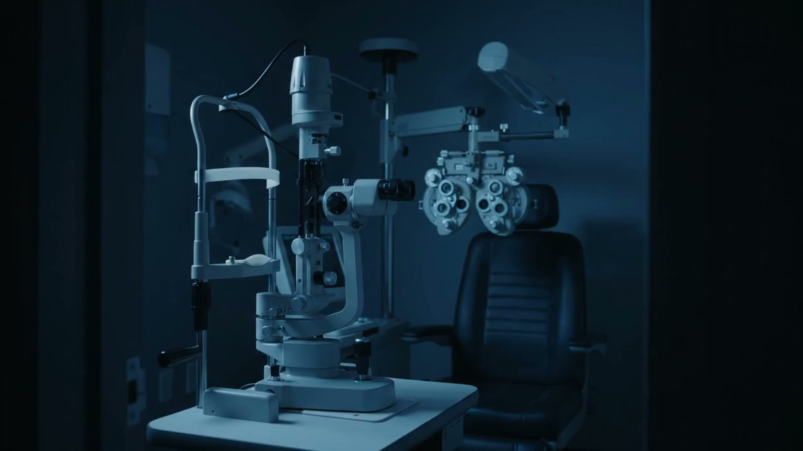
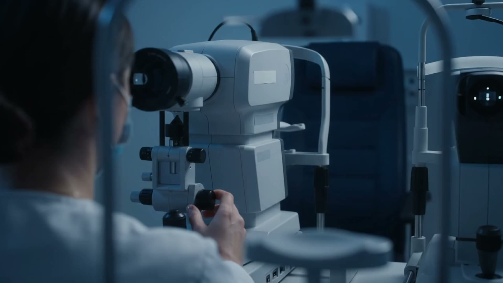
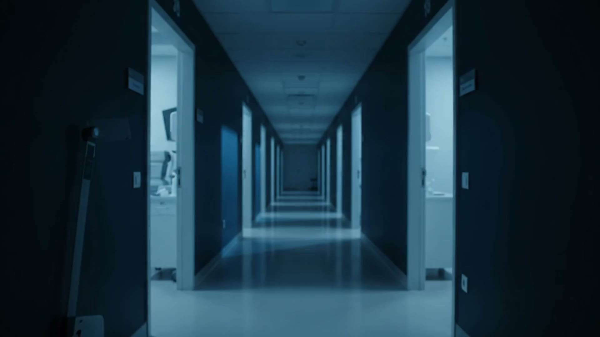

Technician staffing software for eye clinics
Same patient count.
Not the same day.
Forecast the technician minutes each clinic session will need. Staff it under eight rules the system does not relax, with a person approving every plan.
A fixed ratio counts heads.
It cannot see appointment mix, testing load, complexity or how a particular provider works. Every session becomes the same session.
On the system's synthetic validation holdout the forecast's average error is 24.44 minutes against the fixed ratio's 208.61.
Two sessions, ten patients each
Ten patients each.
Neuro-ophthalmology
345 minutes / 2 techniciansGlaucoma
181 minutes / 1 technicianForecasts on the synthetic validation set for 2026-09-08. The fixed ratio asks for two technicians in both.
Eight rules. Not relaxed to improve a score.
Try to break one.
The rules protect your credentialing, site eligibility and hour caps, and they hold when someone is out. A technician has called off. Put someone on the 8 a.m. glaucoma list at Avon Meadows.
Who covers it?
The rule names and the refusal wording are the system's own. This panel reproduces them and is not connected to a running system. SITE_ELIGIBILITY and COMPETENCY are two of eight hard constraints.
Every change is written down. Alter one entry and the verification endpoint reports the break.
Every plan, override, refusal and approval goes to an append-only, hash-chained log with who acted and why.
Start with Phase Zero. It retrains on your own history and scores the forecast against the ratio you use today. If it does not win, the engagement stops and the finding is yours.
Phase Zero starts at $7,500, fixed fee. It runs on operational counts you export: per-session appointment mix, complexity flags and realized technician minutes. Patient identifiers stay in your systems, and how the export is prepared, including whether it is protected health information in your hands, is agreed with your privacy office before anything moves.
Figures shown come from the system's synthetic validation set. Not validated on real clinic data. Not HIPAA certified.
Kestrel Ridge Health is the operating name of a founder-operated business in Cleveland, Ohio, not a separately incorporated company. hello@kestrelridgehealth.com